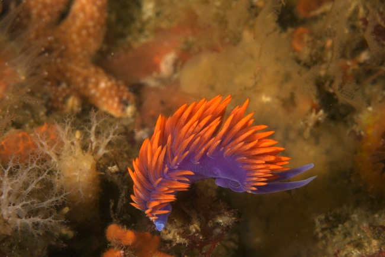

Channel Islands May 2007
Index
Previous
5 of 27
Next
Rating: 3
Badges: Adjusted Keyword
Aperture: f/18
Shutter Speed: 1/125
Exposure Bias: -1.3ev
Focal Length (35mm): 157mm
Focal Length: 105mm
Keywords: Channel Islands, Diving, San Miguel Island
Name: Channel Islands 2007-05-27 15-04-27
Image Date: 5/27/07 3:04:27 PM PDT
ISO Speed Rating: ISO400
File Size: 15.42 MB
Master Location: Channel Islands 2007-05
